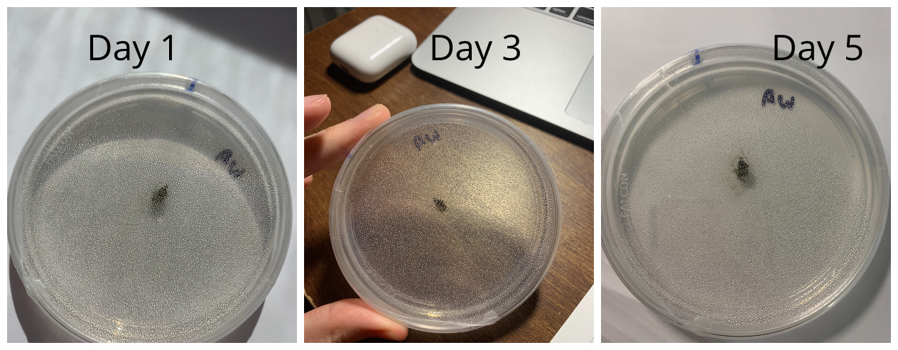
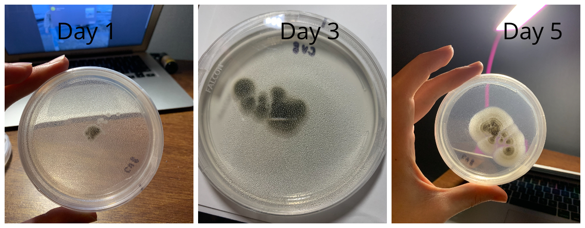

Hypothesis
My microbe not grow in Water Agar.
Description of experiment
For this experiment, I placed one plug of my microbe in the CV8 Media, and another in a petri dish filled with Water Agar. I then placed them in a drawer in my room to keep them away from light (or at least exposing them to light at the same amount of time when opening the drawer), I then observed the growth of my microbe for 5 days and recorded the results.
Results
Treatment Group 1(Microbe placed in Water Agar)
There was no increase in size.
Treatment Group 2(Microbe placed in CV8)
There was a clear increase in size, which means the fungi was growing
Conclusion
- My hypothesis was correct, my microbe could not grow in Water Agar (WA)and it thrived in CV8 media.
- I think the reason that it did not grow in WA is because there are no nutrients in the media for the fungi to absorb, which means no nutrients were supplied to the fungi.
- It thrived in CV8 media perhaps because CV8 contains a nutrient mix derived from different fruits/vegetables, and my fungi could absorb the nutrients and grow.
- Through this experiment, I have learned that my microbe, Mike Robe, enjoys nutrients from vegetables and fruits and is able to thrive when when these nutrients are provided as a nutrient source.